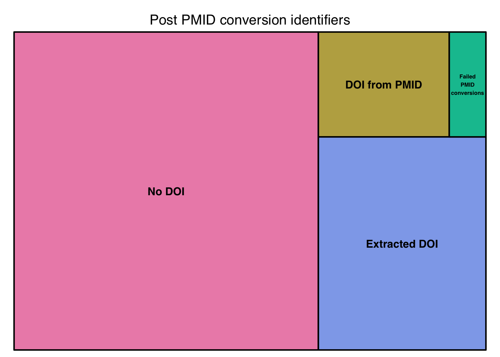

By Martin John Hadley | January 11, 2019
Many more than 3 times have I been asked by academics to create a collaboration network from a messy collection of citations. So I should really create a function to do this for me.
DOI (Digital Object Identifiers) are the gold standard for citations, they’re guaranteed to point directly to the resource you care about. Sadly, citations often don’t include them. Here’s a set of 10 from the
Let’s go through the most recent data file I was provided by an academic.
CrossRef have a great blogpost about how to match DOIs with regex. Their research suggests 97% of DOI will match this regex: 10.\\d{4,9}/[-._;()/:a-z0-9A-Z]+
How to follow along
If you want to follow along, please follow these steps first:
Create a new RStudio project
Create a data directory by running
dir.create("data-raw")Create a new script
data-raw/messy-citations.R, at the top of the script load all the packages we’ll need:
library("tidyverse")
library("here")
library("readxl")- Download the messy dataset by running
# INSERT LINK
# download.file("https://ndownloader.figshare.com/articles/7376228/versions/3",
# "data/christmassy-drinks-2018.zip")Tidy the citations
Let’s import the messy citations file using the readxl library. The Excel file doesn’t have a naming row at the top, and so we supply a column name to the col_names argument:
messy_citations <- read_xlsx(here("data-raw", "messy-citations_long.xlsx"), col_names = c("citations"))library("tidyverse")## ── Attaching packages ───────────────────────────────────────────────────────────────────────────────────────── tidyverse 1.2.1 ──## ✔ ggplot2 3.1.0 ✔ purrr 0.3.1
## ✔ tibble 2.0.1 ✔ dplyr 0.8.0.1
## ✔ tidyr 0.8.2 ✔ stringr 1.4.0
## ✔ readr 1.3.1 ✔ forcats 0.3.0## ── Conflicts ──────────────────────────────────────────────────────────────────────────────────────────── tidyverse_conflicts() ──
## ✖ dplyr::filter() masks stats::filter()
## ✖ dplyr::lag() masks stats::lag()library("here")## here() starts at /Users/martinjhnhadley/Github/visibledata.github.iolibrary("readxl")
library("rcrossref")
library("treemap")
messy_citations <- read_xlsx(here("static", "data", "messy-citations_long.xlsx"),
col_names = c("citations")
)If you open the Excel file up, you’ll notice that many of the citations are spread across multiple lines. Here’s the first citation split over 4 rows:
messy_citations %>%
slice(1:4)## # A tibble: 4 x 1
## citations
## <chr>
## 1 Fernandez MA, Arnel L, Gould J, McGibbon A, Grant R, Bell P, White S, Ba…
## 2 Research priorities in fragility fractures of the lower limb and pelvis:…
## 3 BMJ Open. 2018 Oct 3;8(10):e023301.
## 4 <NA>What are the rules for grouping citations?
- There’s an NA at the end of all citations that wrap over multiple rows.
Let’s use this information to create a unique citation_id based on the row number where citations == NA:
grouped_messy_citations <- messy_citations %>%
mutate(wrapped = ifelse(is.na(citations), TRUE, FALSE)) %>%
mutate(
citation_id = 0,
citation_id = ifelse(wrapped == TRUE,
row_number(),
NA
)
)
grouped_messy_citations## # A tibble: 599 x 3
## citations wrapped citation_id
## <chr> <lgl> <int>
## 1 Fernandez MA, Arnel L, Gould J, McGibbon A, Grant R… FALSE NA
## 2 Research priorities in fragility fractures of the l… FALSE NA
## 3 BMJ Open. 2018 Oct 3;8(10):e023301. FALSE NA
## 4 <NA> TRUE 4
## 5 Costa ML, Achten J, Bruce J, Tutton E, Petrou S, La… FALSE NA
## 6 Effect of Negative Pressure Wound Therapy vs Standa… FALSE NA
## 7 JAMA. 2018 Jun ;319(22):2280–2288 FALSE NA
## 8 <NA> TRUE 8
## 9 Costa ML, Achten J, Hennings S, Boota N, Griffin J,… FALSE NA
## 10 Intramedullary nail fixation versus locking plate f… FALSE NA
## # … with 589 more rowsNow we can use fill() from tidyr to fill all upwards with our citation_id and also use filter() to throw away the empty NA row.
grouped_messy_citations <- grouped_messy_citations %>%
fill(citation_id, .direction = "up") %>%
filter(!is.na(citations))
grouped_messy_citations## # A tibble: 460 x 3
## citations wrapped citation_id
## <chr> <lgl> <int>
## 1 Fernandez MA, Arnel L, Gould J, McGibbon A, Grant R… FALSE 4
## 2 Research priorities in fragility fractures of the l… FALSE 4
## 3 BMJ Open. 2018 Oct 3;8(10):e023301. FALSE 4
## 4 Costa ML, Achten J, Bruce J, Tutton E, Petrou S, La… FALSE 8
## 5 Effect of Negative Pressure Wound Therapy vs Standa… FALSE 8
## 6 JAMA. 2018 Jun ;319(22):2280–2288 FALSE 8
## 7 Costa ML, Achten J, Hennings S, Boota N, Griffin J,… FALSE 12
## 8 Intramedullary nail fixation versus locking plate f… FALSE 12
## 9 Health Technol Assess 2018;22(25) FALSE 12
## 10 Sims AL, Parsons N, Achten J, Griffin XL, Costa ML,… FALSE 16
## # … with 450 more rowsNot all of the citations wrapped over multiple rows, these currently have the citation_id of NA. Let’s replace those with the citations row_number() and convert this to a character column:
grouped_messy_citations <- grouped_messy_citations %>%
mutate(
citation_id = ifelse(is.na(citation_id), row_number(), citation_id),
citation_id = as.character(citation_id)
)
grouped_messy_citations## # A tibble: 460 x 3
## citations wrapped citation_id
## <chr> <lgl> <chr>
## 1 Fernandez MA, Arnel L, Gould J, McGibbon A, Grant R… FALSE 4
## 2 Research priorities in fragility fractures of the l… FALSE 4
## 3 BMJ Open. 2018 Oct 3;8(10):e023301. FALSE 4
## 4 Costa ML, Achten J, Bruce J, Tutton E, Petrou S, La… FALSE 8
## 5 Effect of Negative Pressure Wound Therapy vs Standa… FALSE 8
## 6 JAMA. 2018 Jun ;319(22):2280–2288 FALSE 8
## 7 Costa ML, Achten J, Hennings S, Boota N, Griffin J,… FALSE 12
## 8 Intramedullary nail fixation versus locking plate f… FALSE 12
## 9 Health Technol Assess 2018;22(25) FALSE 12
## 10 Sims AL, Parsons N, Achten J, Griffin XL, Costa ML,… FALSE 16
## # … with 450 more rowsNow we can group_by(citation_id) and paste() together the citations to create a neat set of citations!
clean_citations <- grouped_messy_citations %>%
group_by(citation_id) %>%
mutate(citations = citations %>% paste(collapse = " ")) %>%
ungroup() %>%
select(-wrapped, -citation_id) %>%
unique()
clean_citations## # A tibble: 266 x 1
## citations
## <chr>
## 1 Fernandez MA, Arnel L, Gould J, McGibbon A, Grant R, Bell P, White S, B…
## 2 Costa ML, Achten J, Bruce J, Tutton E, Petrou S, Lamb SE, Parsons NR, U…
## 3 Costa ML, Achten J, Hennings S, Boota N, Griffin J, Petrou S, Maredza M…
## 4 Sims AL, Parsons N, Achten J, Griffin XL, Costa ML, Reed MR. A randomiz…
## 5 Costa ML, Achten J, Foguet P, Parsons NR; Young Adult Hip Arthroplasty …
## 6 Costa ML, Achten J, Griffin J, Petrou S, Pallister I, Lamb SE, Parsons …
## 7 Wall PDH, Parsons NR, Parsons H, Achten J, Balasubramanian S, Thompson …
## 8 Pulikottil-Jacob R, Connock M, Kandala NB, Mistry H, Grove A, Freeman K…
## 9 Perry DC, Metcalfe D, Griffin XL, Costa ML. Inequalities in use of tota…
## 10 Dreinhöfer KE, Mitchell PJ, Bégué T, Cooper C, Costa ML, Falaschi P, He…
## # … with 256 more rowsBut… these citations aren’t that clean. Many of the citations start as follows:
15. Doe, Jo. Nature
We can fix this with str_replace() and a little regex:
clean_citations <- clean_citations %>%
mutate(
citations = str_replace(citations, "^\\d{1,}.", ""),
citations = str_trim(citations)
)Let’s create a data folder and export our tided data!
dir.create("data")
clean_citations %>%
write_csv(here("data", "text-citations.csv"))clean_citations %>%
write_csv(here("static", "data", "text-citations.csv"))Extracting DOI and PMID with regex
We’re going to design some functions for extracting DOI and PMID from raw citations in stages. First, we need a new script file extract-doi-and-pmid-from-citations.R and load the following packages at the top
library("tidyverse")
library("here")
text_citations <- read_csv(here("data", "text-citations.csv"))text_citations <- read_csv(here("static", "data", "text-citations.csv"))## Parsed with column specification:
## cols(
## citations = col_character()
## )The tidyverse includes the excellent stringr for working with regular expressions, allowing us to extract DOIs and PMIDs with str_extract():
tidied_citations <- text_citations %>%
mutate(doi = str_extract(citations, "10.\\d{4,9}/[-._;()/:a-z0-9A-Z]+")) %>%
mutate(
pmid = str_extract(citations, "(PMID:|pmid:) \\d{8}"),
pmid = str_extract(pmid, "\\d{8}")
) %>%
mutate(
doi.extracted = ifelse(!is.na(doi), TRUE, FALSE),
pmid.extracted = ifelse(!is.na(pmid), TRUE, FALSE)
)pmid_to_doi <- function(pmid) {
results <- id_converter(pmid, type = "pmid")
if(is.null(results[["status"]])){
return(NA)
} else
results$record$doi
# if (results$records$status == "error") {
# NA
# } else {
# results$records$doi
# }
}library(future)
plan(multiprocess)
pmid_converted_citations <- tidied_citations %>%
filter(is.na(doi)) %>%
filter(!is.na(pmid)) %>%
mutate(doi_from_pmid = map(pmid, ~future(pmid_to_doi(.x)))) %>%
mutate(doi_from_pmid = map(doi_from_pmid, ~values(.x))) %>%
mutate(doi_from_pmid = as.character(doi_from_pmid)) %>%
mutate(doi_from_pmid = ifelse(doi_from_pmid == "NULL",
NA,
doi_from_pmid))# This takes a few minutes
library(future)
plan(multiprocess)
pmid_converted_citations <- tidied_citations %>%
filter(is.na(doi)) %>%
filter(!is.na(pmid)) %>%
mutate(doi_from_pmid = map(pmid, ~future(pmid_to_doi(.x)))) %>%
mutate(doi_from_pmid = map(doi_from_pmid, ~values(.x))) %>%
mutate(doi_from_pmid = as.character(doi_from_pmid)) %>%
mutate(doi_from_pmid = ifelse(doi_from_pmid == "NULL",
NA,
doi_from_pmid))
tidied_citations <- tidied_citations %>%
full_join(pmid_converted_citations)
tidied_citations %>%
write_csv(here("static", "data", "tidied_citations.csv"))Unfortunately, 66% of our citations still don’t have DOI.
## Parsed with column specification:
## cols(
## citations = col_character(),
## doi = col_character(),
## pmid = col_double(),
## doi.extracted = col_logical(),
## pmid.extracted = col_logical(),
## doi_from_pmid = col_character()
## )library("treemap")
treemap(
postconversion_identifier_summaries,
index = "variable",
vSize = "value",
title = "Post PMID conversion identifiers",
algorithm = "squarified"
)
Manual DOI extraction
In a draft version of this blog post I attempted to use the rcrossref package for converting the unknown citations into DOI. Unfortunately, I massively overestimated the cleanliness of the data. The old code isn’t worthwhile, but the results are… because I can use these to fix up the data manually.
library("readxl")
draft_citation_data <- read_csv(here("static", "data", "cross_referenced_citations.csv"))
manually_searched_doi <- read_xlsx(here("static", "data", "cross_referenced_citations_manual.xlsx"))
# File was opened in Excel, corrupting symbols.
manually_searched_doi$citations <- draft_citation_data %>%
filter_at(c("doi", "doi_from_pmid"), is.na) %>%
select(citations) %>%
.[[1]]draft_citation_data %>%
left_join(manually_searched_doi) %>%
select(citations, doi, doi_from_pmid:doi_manual) %>%
rename(doi_extracted = doi) %>%
select(doi_extracted, doi_from_pmid, doi_manual) %>%
filter(!rowSums(is.na(.)) == ncol(.)) %>%
mutate(doi = paste(doi_extracted, doi_from_pmid, doi_manual),
doi = str_replace_all(doi, "NA", ""),
doi = str_trim(doi)) %>%
select(doi, everything()) %>%
mutate_at(vars(doi_extracted, doi_from_pmid, doi_manual), list(~ifelse(is.na(.), FALSE, TRUE))) %>%
gather(source, value, doi_extracted:doi_manual) %>%
filter(value == TRUE) %>%
select(doi, source) %>%
write_csv(here("static", "data", "fully_processed_dois.csv"))